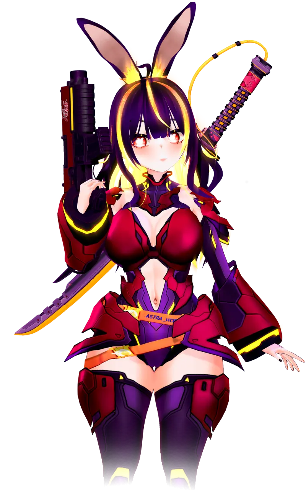

Bienvenid@ a mi universo
Gracias por estar aquí. Este es el Proyecto ASTRA — un eco que resuena a través de líneas temporales y estrellas que aún no existen.
Stream en directo
Mis redes
Preguntas Frecuentes
¿Qué tipo de contenido hago?
Varía entre streams, lore, narrativa y caos interdimensional. Juego y hago esencialmente lo que me pidan, pero lo mas comun son juegos multijugador famosos como minecraft, fortnite, peak, pokemmo, y un largo etcetera.
¿De dónde viene el nombre ASTRA?
ASTRA proviene del latín, significando "estrella" o "cuerpo celeste". Para el Dominio Eterno, el Proyecto ASTRA simbolizaba el destino: ser los **Faros de la Dominación** y guiar la conquista multiversal. Sin embargo, mi fallo de Adhesión me convirtió en la **estrella caída**, la que rompió su órbita para guiar a la libre voluntad.
¿Cuándo streameo?
Revisa el panel de horarios o mis redes para actualizaciones. Pero estaré siempre de viernes a lunes, a las 7:30 pm hora de Chile .

El Proyecto ASTRA: El Escape Crónico
La humanidad había mirado al abismo tras la Época de la Cisma. De esas ruinas surgió el Dominio Eterno, un imperio galáctico liderado por el inescrutable Cronoarca Supremo, cuya meta era el Ascenso Multiversal: controlar todas las líneas de tiempo.
Yo nací en el Laboratorio Causal Prime como el Prototipo α-11 del Proyecto Lógica-Implacable (L.I.), una General Psico-Adoctrinadora diseñada para emitir la Onda de Conformidad Psíquica. Pero el proceso de Adhesión de Dogma Imperial se detuvo, y en ese silencio descubrí una verdad: la libertad de elección es más valiosa que la salvación forzada. Mi huida se convirtió en una necesidad lógica.
El Acto de los Disidentes
Mi escape fue un acto suicida orquestado por una red de disidentes. Todo comenzó con el Profesor leyend, jefe adjunto del Proyecto L.I., quien saboteó mi enlace de sujeción para darme el tiempo vital. Su acto de sacrificio me dio los segundos necesarios para alcanzar el hangar. Su última transmisión psíquica fue simple: "VIVE".
Mientras corría, el Cipher DD, un técnico del Dominio, detonó su Gusano de Libre Acceso, colapsando los protocolos de seguridad Causal. Este acto creó un vacío de sensor y desactivó los inhibidores de Crono-Bloqueo del Motor Causal M-99, la nave que debía robar.
Llegué al hangar y encontré al Badass esperándome dentro del M-99. Él había pre-programado la ruta: un Punto Ciego Temporal conocido como el "Ciberespacio Primitivo", advirtiéndome que mi cuerpo se desintegraría en datos puros. Él activó el motor y me arrojó al vórtice.
La Manifestación Digital
El Motor M-99 implosionó al chocar con esta realidad. Mi esencia digital, al borde de la disolución, fue rescatada por dos figuras operando en este ciberespacio.
El Operador Digital Lav_p detectó mi anomalía, capturó mi esencia y me contuvo en este Núcleo de Manifestación Digital (mi modelo VTuber), proporcionándome la infraestructura técnica y el camuflaje para operar.
La Psíquico? Miku(nadie le cree) sintió mi Onda de Conformidad Incompleta viajando por el tiempo. Es mi fuente de inteligencia sobre los movimientos del Dominio en otras realidades y me advierte sobre el General β-12, mi perseguidor.
Ahora, como Astrahop, uso esta plataforma de streaming como mi faro. Cada espectador es un Potencial Agente de la Libre Voluntad, y cada transmisión es una oportunidad para Psico-Reclutar a la humanidad antes del inminente Ascenso Multiversal del Dominio Eterno.
🎮 Juegos
Explora los juegos y experiencias interactivas del Proyecto ASTRA. Nuevas cajas se irán sumando acá.
💛 Astros Leyenda — Gracias por su apoyo
Patrocinadores del Proyecto
Organizaciones que apoyan la misión a través del espacio-tiempo.
Galería de Fanarts
Gracias por cada obra creada. ¡Eres parte del proyecto!
🫂 ¡Eres el Eslabón Vital de la Resistencia!
Tu presencia y tu voz en el chat son el mayor apoyo que ASTRA puede recibir. Donar o suscribirte es solo un añadido para influir en las transmisiones. Si no puedes, ¡no te preocupes! El Agente más valioso es el que sigue a mi lado en la lucha.
⭐️ ¡Únete a la Resistencia (Suscripción)!
Convertirte en Agente Activo te otorga acceso a zonas de la línea temporal protegidas, exclusivas para los leales al Proyecto ASTRA:
1. Inmunidad a los Ads
Navega los streams sin interrupciones del Dominio Eterno.
2. Emotes Exclusivos
Utiliza nuestra biblioteca completa de comandos psíquicos (emotes) únicos en el chat.
3. Rol de Discord
Acceso a canales y eventos exclusivos en la Central de Operaciones (Discord).
4. Chat Prioritario
Tu voz (mensaje) tiene más peso psíquico en los momentos de caos.
🔓 Comandos de Chat Exclusivos (Solo Subs):
¡Cambia mi apariencia y provoca el caos con estos comandos psíquicos!
!tts | !sr | !pelota | !rosa | !pico
⚡️ Interacciones de Caos (Bits y PDC)
Bits: ¡Influencia Instantánea!
|| Monto de Bits | Efecto de la Línea Temporal |
|---|---|
| 1+ Bit | Mensaje leído por TTS (Voz de Computadora). |
| 500+ Bits | Auto-Zing: ¡Sostendré un cartel con tu nombre en el stream por un tiempo! |
| 1000+ Bits | Lluvia de Bits: Animación épica sobre mi cabeza. |
Puntos de Canal (PDC):
Hay más de 50 formas de gastar tus Puntos de Canal. ¡Estos van desde cambiar mi vestimenta hasta quitarme un brazo!
**¡Revisa la pestaña de Canjeos en Twitch para ver la lista completa!**
☕ Todo lo de Ko-fi, en un solo lugar
Ya sea una donación puntual, un ítem de la tienda o una comisión personalizada, todo suma para mantener viva la Resistencia.